Identity DomainではSMSやメール、モバイルアプリケーションのワンタイム・パスコードなどを使用してユーザーに二要素認証を要求することができます。 また、全ユーザーに二要素認証を要求するのではなく、特定のグループに属しているユーザーや、特定のネットワークからログインしたユーザーなど、条件を指定して二要素認証を要求できます。 本チュートリアルでは、Identity Domainの特定のグループに属しているユーザーに二要素認証を要求するための設定手順を紹介します。
所要時間 : 約20分
前提条件 :
- アイデンティティとセキュリティ編 - OCI IAM Identity Domains - テナント管理者・一般ユーザーを作成するを参考に、MFAを有効化したいユーザーを作成していること
- Identity Domainの管理者が本チュートリアル記載の設定作業をすること
注意 : ※チュートリアル内の画面ショットについてはOracle Cloud Infrastructureの現在のコンソール画面と異なっている場合があります。
1. グループの作成
本チュートリアルでは、特定のグループに属しているユーザーがIdentity Domainにログインする際に、二要素認証を要求するように設定をします。
最初に、二要素認証を要求するグループを作成し、ユーザーをグループに追加します。
OCIコンソール左上のメニュー → アイデンティティとセキュリティ → アイデンティティ → ドメイン → 対象のドメインを選択します。
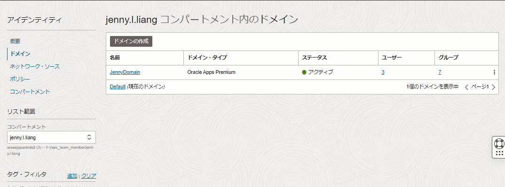
ドメインの詳細画面で、「グループ」のタブを開き、「グループの作成」ボタンをクリックします。
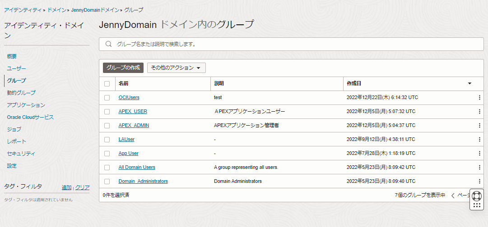
グループの作成画面で、グループ名とグループの説明を入力し、グループに追加するユーザーを選択します。
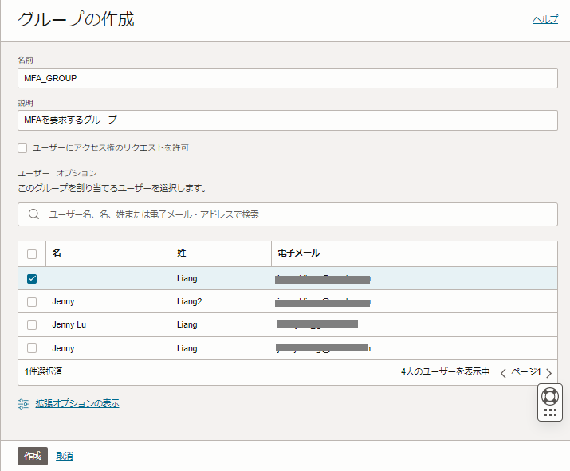
「作成」ボタンをクリックし、グループを作成します。
以上の手順で、二要素認証を要求するグループを作成しました。
2. MFAの有効化
Identity Domain内で有効化する二要素認証の”ファクタ”を選択します。
ドメインの詳細画面 → セキュリティ → MFAのタブを開き、任意のファクタにチェックを入れます。 本チュートリアルでは例としてモバイルアプリケーションのパスコードと通知を有効化します。
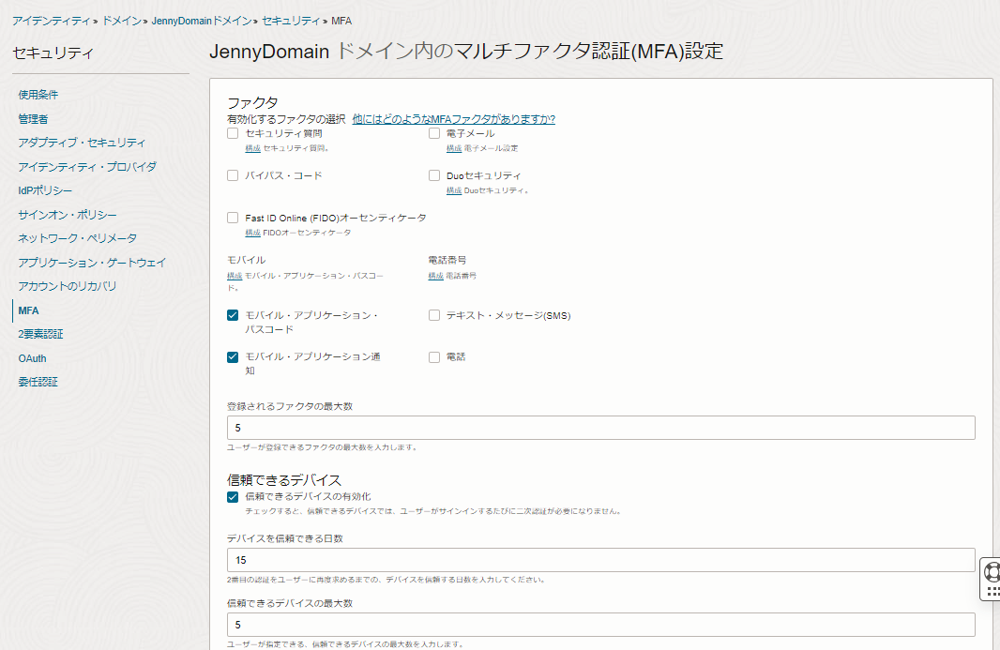
※「テキスト・メッセージ（SMS）」はFreeタイプのドメインでは利用できませんのでご注意ください。
3. サインオン・ルールの編集
3-1. サインオン・ルールの追加
二要素認証のファクタを有効化したら、次はサインオン・ポリシーで二要素認証を要求するグループを定義します。 ドメインの詳細画面 → セキュリティ → サインオン・ポリシー → Default Sign-On Policy → 「サインオン・ルールの追加」ボタンをクリックします。
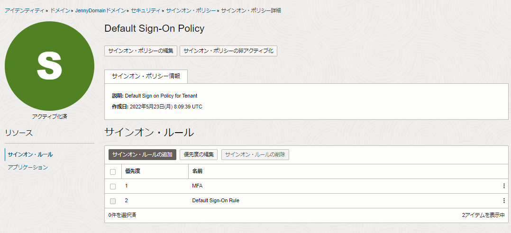
本チュートリアルでは、手順1で作成したグループに属するユーザーが、ユーザー名とパスワードを使用してIdentity Domainにログインしたら、二要素認証を要求するルールを追加します。
サインオン・ルールの追加画面にて、以下を入力、選択します。
- 名前 - 任意
- アイデンティティ - 「Username-Password」を選択
- グループ・メンバーシップ - 手順1で作成したグループを選択
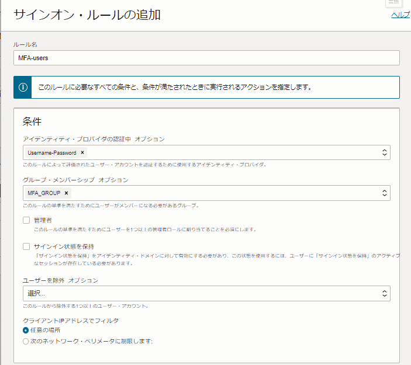
アクションの項目では、「追加ファクタの要求」にチェックを入れ、要求するファクタを選択します。
手順2で複数のファクタを有効化した場合は、ユーザーが任意のファクタを選択・構成できるように「任意のファクタ」を選択できます。 また、特定のファクタを用いた二要素認証を要求したい場合は、「指定されたファクタのみ」を選択することで、ユーザーが使用する二要素認証のファクタを管理者が指定することも可能です。
以下の例では、「指定されたファクタのみ」を選択し、モバイルアプリケーションによる二要素認証を指定しています。
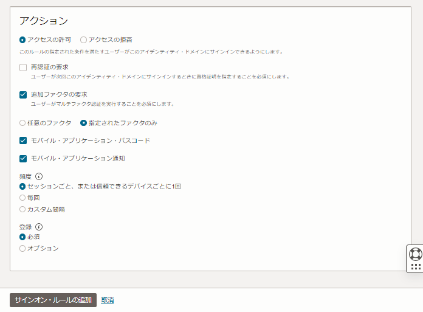
アクションの指定が完了したら、サインオン・ルールの追加画面下の「サインオン・ルールの追加」ボタンをクリックします。
以上の手順で、手順1で作成したグループに属するユーザーが、ユーザー名とパスワードを使用してドメインにログインしたら、モバイルアプリケーションによる二要素認証を要求するルールを追加しました。
3-2. サインオン・ルールの優先度の編集
続いて、Default Sign-On Policyの詳細画面にて「優先度の編集」ボタンをクリックします。
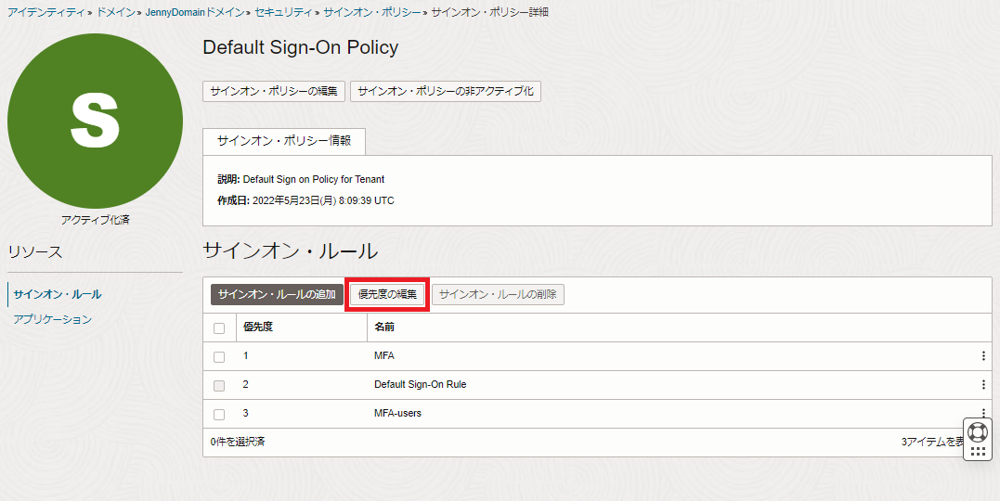
サインオン・ルール優先度の編集画面にて、手順3-1で追加したサインオン・ルールを優先度1に変更し、「変更の保存」をクリックします。
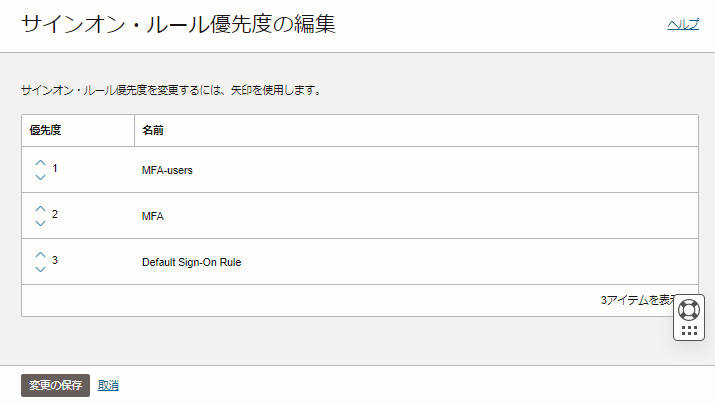
以上でサインオン・ルールの編集作業、および二要素認証の設定は終了です。
サインオン・ルールは優先度1から順番に適用されます。 デフォルトで定義されている Default Sign-On Ruleには、全ユーザーが対象のドメインにログインできるようにルールが定義されています。
新しく追加したサインオン・ルールを、Default Sign-On Ruleより高い優先度に設定することで、全ユーザーのログインを許可する前段階で特定のユーザーに二要素認証を要求することが可能です。
サインオン・ルールの優先度はご自身のドメインの要件等に応じて適宜ご変更ください。
4. モバイルアプリケーションの構成（補足）
管理者がユーザーに二要素認証を要求するルールを追加すると、対象のユーザーがドメインにログインする際に以下のような画面が表示されます。
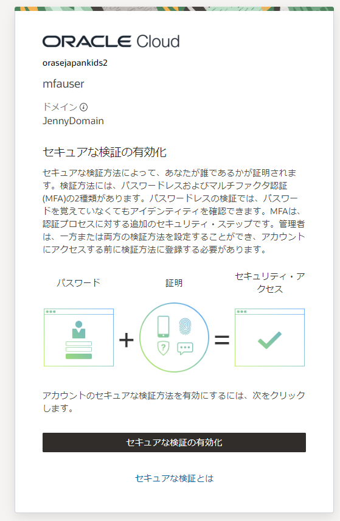
「セキュアな検証の有効化」をクリックすると、モバイルアプリケーションを構成することが可能です。
Oracleが提供するモバイルアプリケーションを使用する場合、お手元のスマートフォンに「Oracle Mobile Authenticator」をダウンロードし、表示されたQRコードをモバイルアプリケーションからスキャンします。
他社が提供するモバイルアプリケーション（例. Google Authenticatorなど）を使用する場合は、「オフライン・モードまたは別のオーセンティケータ・アプリケーションを使用」をクリックしてください。
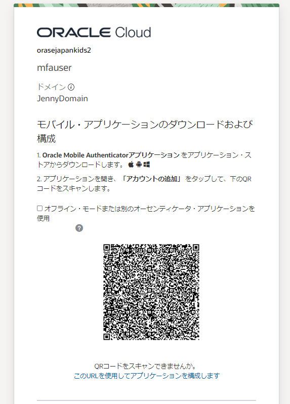
QRコードをスキャンし、正常にドメインにご利用のスマートフォンのモバイルアプリケーションが登録されると、以下のような画面が表示されます。
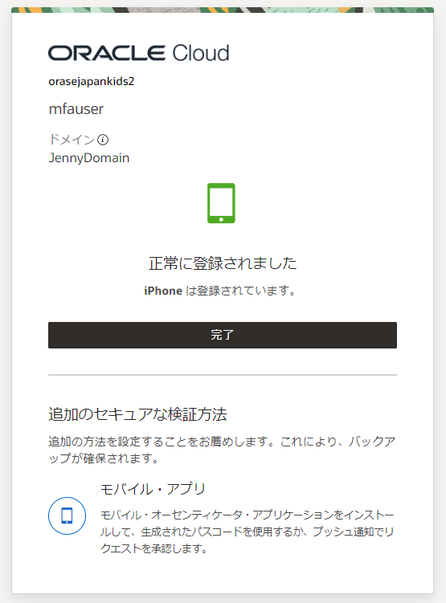
以上でモバイルアプリケーションの登録・構成は終了です。
ログイン時にモバイルアプリケーションへの通知への許可、またはワンタイム・パスコードの入力が求められるので、適宜モバイルアプリケーション側で操作をしてください。